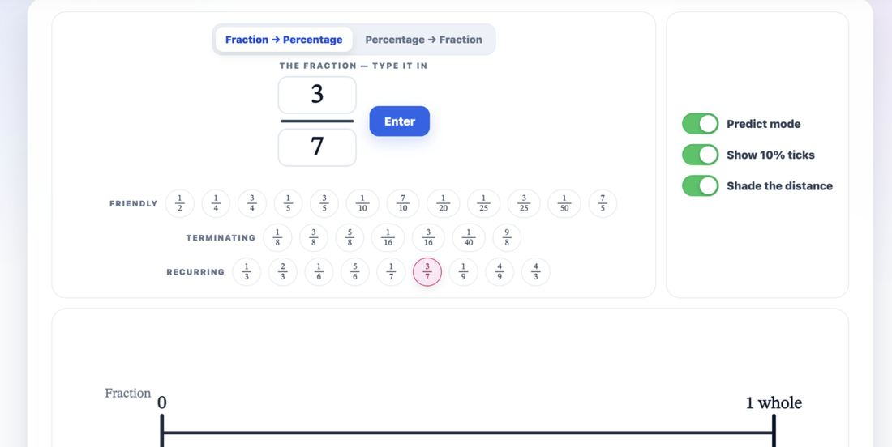
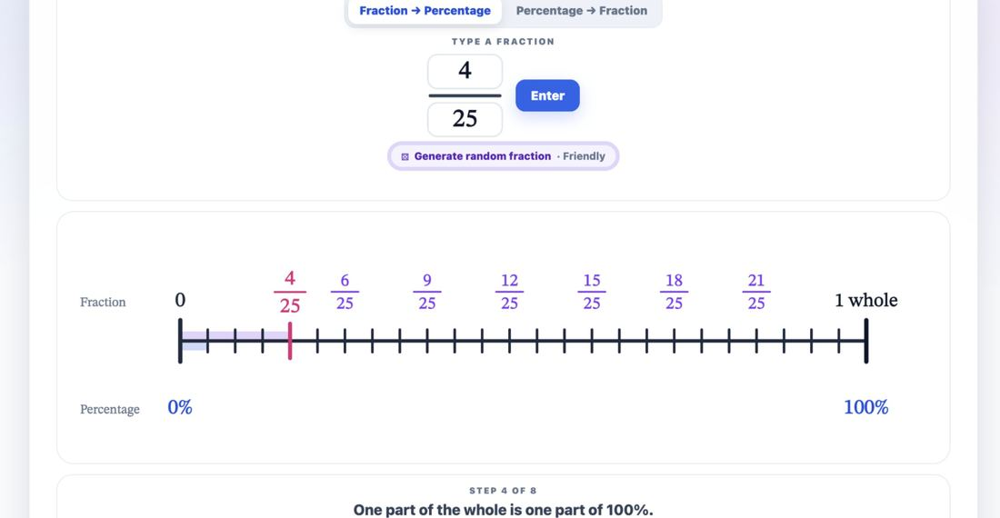

One tool. Two rounds. The prompts are exactly as they were typed —
including the typos, which did not matter.
Where this came from. These are the actual prompts and screens from building
the Fraction to Percentage tool on millsmathstools.au, transcribed from the
screenshots in the MANSW session deck. What you are reading is the teacher's half of
the conversation and the result of each round. Claude's written replies are not
reproduced — they were long, and they are not the part you need to copy.
Round one · the opening prompt
Ask for thinking before you ask for a thing
I would like to make another tool for the millsmathstools platform. I am wanting to
create an interactive I can use as a classroom teacher, it will be a tool that I can use
to represent a fraction as a percentage. It can be called "Fraction to percentage". I am
thinking that it can operate in a double number line way, one where the fraction is on
top and then the percentage is on the bottom.
For example, if the fraction is 3/5, then it will show a number line that has the
fraction displayed, a partitioned number line of the fraction and then 0/100% only
labelled. This allows the teacher to then ask students on mini-whiteboards, etc to
estimate what the percentage would be. My plan to teach this is to find 1/5 of 100 (that
is, 100 divided by 5) and then find three fifths.
What pedagogical thoughts do you have to build this idea before building the
interactive?
What is doing the work here
The last line. It asks for thinking, not for code. Nothing gets built until
the reasoning has been checked — which is the only point at which it is cheap to
change your mind.
A hand-drawn sketch was attached — a biro number line, 0 to 5/5, with 3/5
marked. Faster than describing it, and unambiguous in a way words are not.
The teaching sequence is stated. "Find 1/5 of 100, then find three fifths."
That single sentence is what makes the finished tool a maths tool rather than a
calculator with a picture on it. It is also the part no AI can supply.
The name is given. Small thing, but it means every later message can say
"the tool" and be understood.

What came back. Everything asked for, and it works — but look where
the number line has ended up. Three rows of preset chips and a panel of toggles have
pushed the actual teaching object off the bottom of the screen.
Round two · the feedback
Say what you can see
feedback
I want the double number line to be a single line with tick marks on either side
like my original drawing. The extra line is not necessary.
can we remove the 'friendly/terminating/recurring' section, and just have a button
that has "Generate random fraction" and above it have a selector that has 'Friendly'
'Terminating' and 'Recurring' so that when that is selected, a random fraction is
generated. This will save much space. See image 1 for current layout feedback,
notivesic that the double number line is buried
fromt hesic fraction.
The current toggles that are on the UI, these can go into a "Settings" dropdown at
the top. That is, click settings and then these toggles appear
What is doing the work here
Two typos and a missing space. They changed nothing. Stop editing your
prompts — the cost of a typo is zero and the cost of not sending the message is an
evening.
"See image 1" — a screenshot went with it, with the problem visible.
Describing a layout in words is slow and lossy; pointing at it is neither.
It leads with what he can see, not with a diagnosis. "The double number line
is buried" is an observation. "Refactor the layout" would have been a guess at a
solution, and a worse instruction.
Three numbered items, each one checkable. You can look at the next version
and say yes or no to each. Compare "make it cleaner", which nobody can act on and
nobody can verify.
It gives a reason: "this will save much space". A reason lets the AI solve
the actual problem rather than only doing as it is told.

What came back. One line with the fraction above and the percentage
below, exactly as the biro sketch had it. Three rows of chips have become one button.
The toggles have gone into Settings. The teaching object is now the biggest thing on
the screen.
The whole loop, in order
This is all of it. It does not get more sophisticated
further in — there are just more turns.
Say what the lesson is, and how you would teach it.
Ask for thinking first. Pedagogical thoughts, or clarifying questions.
Read the answer before anything is built.
Look at what came back — actually open it, at the size a class will
see it.
Screenshot the problem and say what you can see, in the order it
bothers you.
Repeat until it is the thing you pictured.
The tool from this conversation is live at
millsmathstools.au.
Two rounds got it most of the way; a handful more got it the rest.